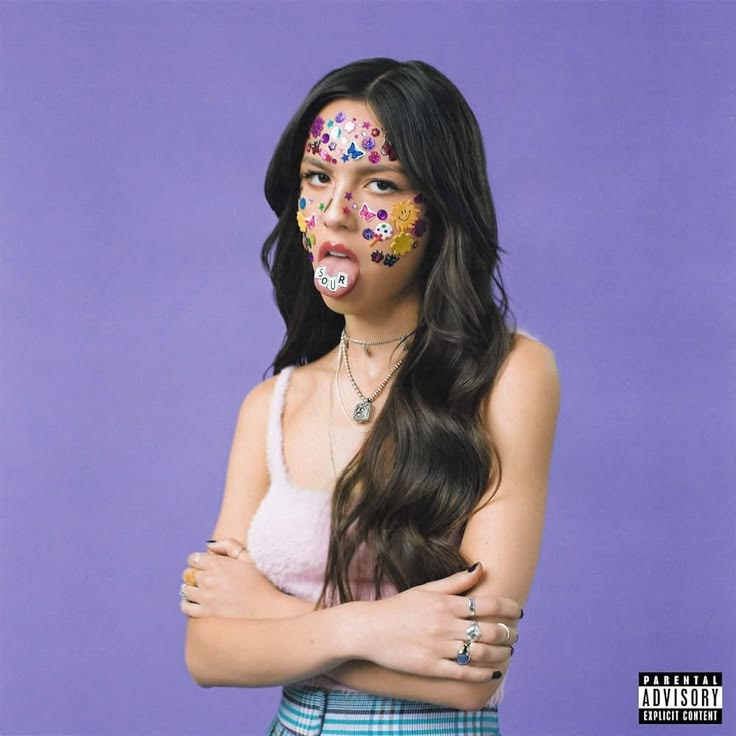
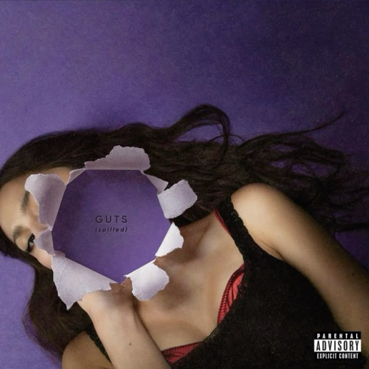
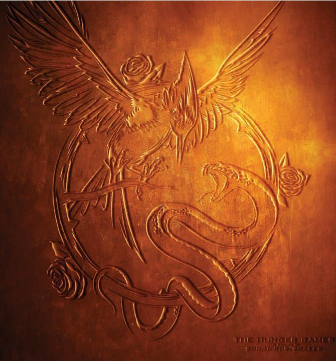
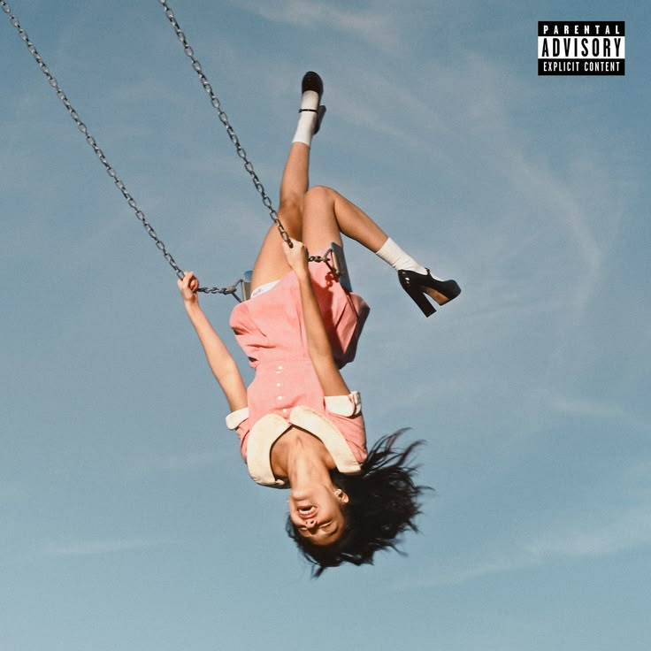

GUTS
GUTS
"Can´t catch me now"
EP
Olivia Isabel Rodrigo nació el 20 de febrero de 2003 en Murrieta, California, y creció en Temecula. Desde muy pequeña demostró interés por las artes escénicas; a los seis años comenzó a tomar clases de canto y actuación, participando en producciones teatrales escolares y obras locales. Su debut formal en la pantalla llegó en 2015, a los 12 años, al protagonizar la película infantil An American Girl: Grace Stirs Up Success tras haber aparecido previamente en un comercial de televisión.
Su gran salto a la notoriedad se produjo de la mano de Disney. En 2016 logró el papel principal de Paige Olvera en la serie de Disney Channel Bizaardvark, producción en la que interpretó a una joven guitarrista durante tres temporadas. Posteriormente, en 2019, consolidó su perfil actoral al asumir el rol de Nini Salazar-Roberts en la serie de Disney+ High School Musical: el musical: la serie, proyecto en el que además comenzó a mostrar sus dotes compositivas al aportar canciones para la banda sonora de la producción.



